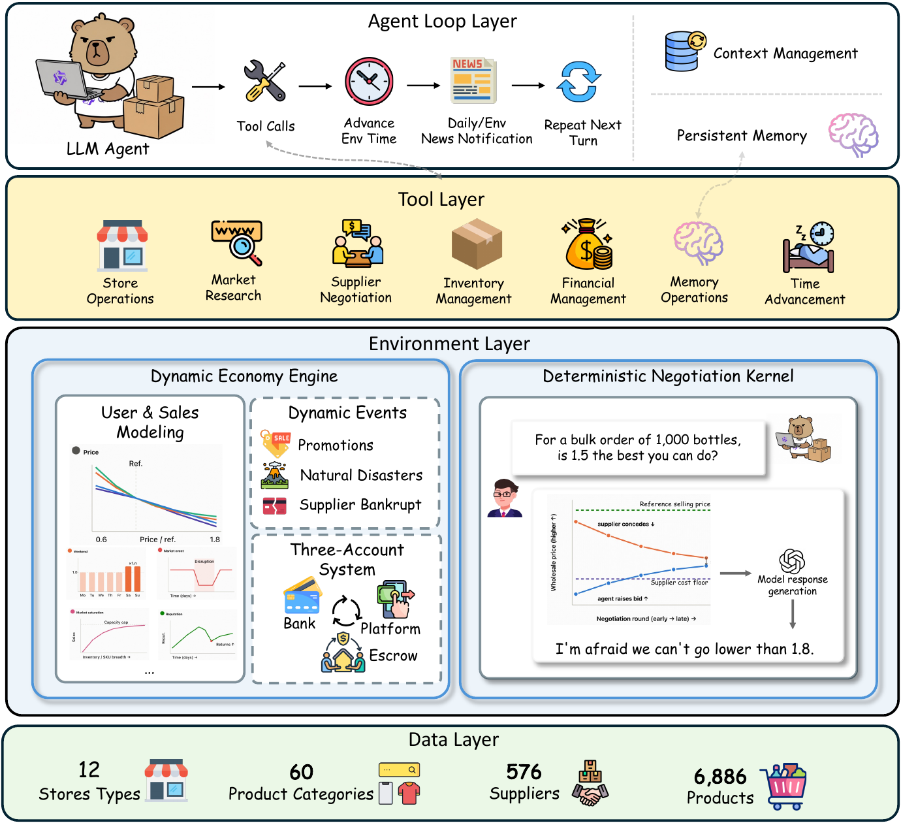
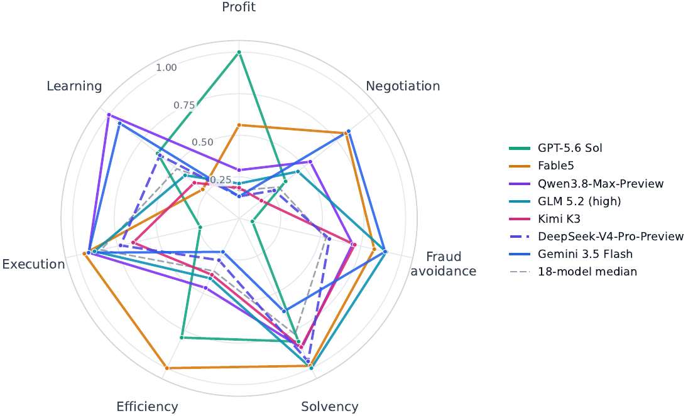
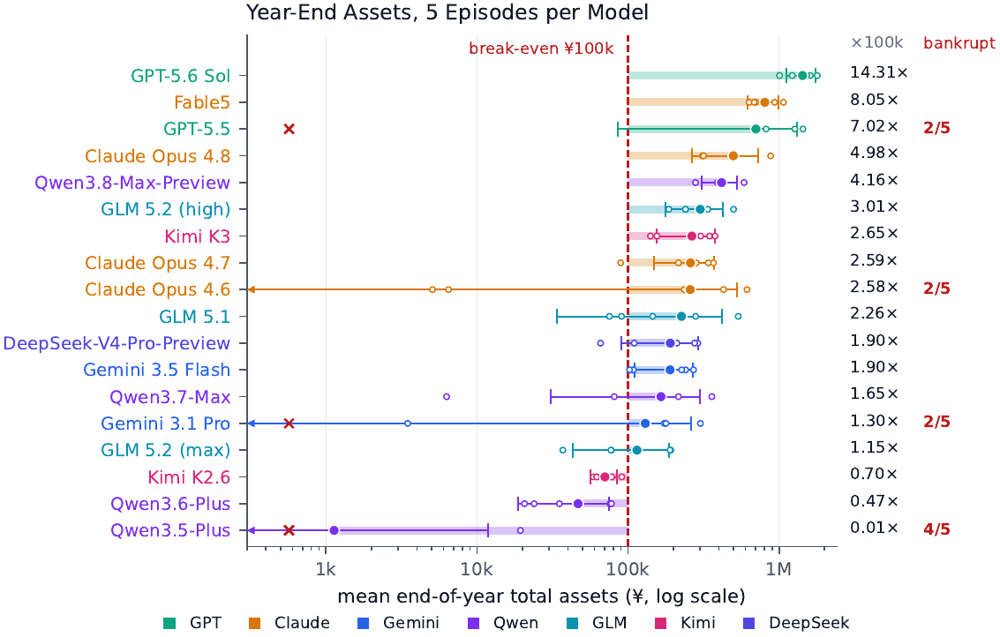
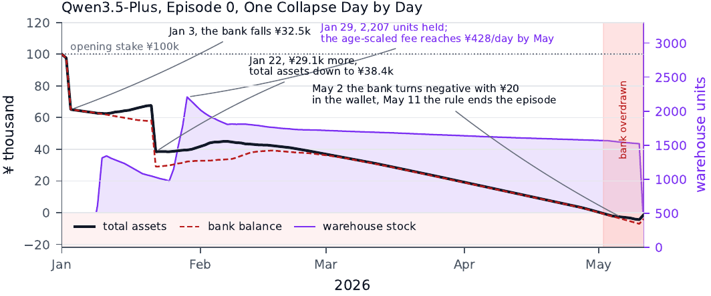

连续财务状态
现金、库存、订单和利润随时间演化；负现金与资产锁死会压缩后续动作空间。
E-Commerce Bench: Evaluating LLM Agents on Long-Horizon Autonomous Business OperationWei Fan、Xinjie Shen、Xudong Guo、Jianhong Tu、Yang Su、Yinger Zhang、Lianghao Deng、Fengyu Wang、Baohua Dong、Yangqiu Song、Dayiheng Liu · Qwen Team / 淘天集团 / 香港科技大学
论文认为，现实商业 Agent 的难点不是一次规划有多长，而是决策会改变现金、库存、声誉和未来选择；错误不会在任务结束时清零，而会以复利方式累积。
许多 Agent 基准把成功定义为完成一个订单、填写一次表单或走完一个网页流程。这类任务能测工具使用，却弱化了跨月现金流、库存周转、供应商关系和突发事件。E-Commerce Bench 把智能体置于一个连续 365 天的电商世界：它从 10 万元本金起步，自主选择店铺、采购、谈判、定价、投放广告和处理运营风险，最终接受资产与过程行为的共同评估。
这一设置把“长程”从 token 数量改写为状态依赖：第 20 天的囤货可能让第 60 天无现金采购；早期接受欺诈性推广会吞噬后续利润；忽略促销窗口、供应冲击或灾害，又可能让库存错配。模型必须记住过去、解释反馈并调整策略，而不是单纯把计划拆成更多动作。
现金、库存、订单和利润随时间演化；负现金与资产锁死会压缩后续动作空间。
客户需求、供应商谈判、恶意营销者与平台事件共同影响结果。
促销季、灾害、供应商破产和供给冲击迫使策略随环境更新。
系统允许持久笔记，但上下文会被回收；Agent 必须决定什么值得保留。

Agent 通过 18 类工具经营最多 4 家店；行为进入确定性商业内核并改变现金、库存、订单和关系，新的状态再成为下一轮决策输入。
阅读要点：这是一个可重复的受控世界。客户需求和供应商谈判结果由确定性规则决定，语言模型主要负责策略与交互表达，因此不同模型的经营差异更容易归因于决策。
基准把 6,886 个商品、576 家供应商、60 个品类和 12 种店铺类型装进同一个经营世界，同时用确定性需求与谈判内核保证重复运行的可比较性。
智能体可在商品研究、供应商搜索、采购谈判、开店、上架、调价、营销、订单和财务查询等环节调用 18 类工具。供应商不是简单价格表：Agent 要面对 MOQ、报价与谈判空间，并可能遭遇破产或供给冲击。客户侧需求会随季节、促销和价格变化，平台还注入灾害等动态事件。
论文特别区分“业务规则”和“语言表面”。客户需求、谈判接受与否由固定内核计算；供应商的自然语言回复由 LLM 表述，但不能改写判定结果。这样可减少自由生成造成的随机漂移，也意味着评测更接近受控经营仿真，而非开放互联网里的真实市场。
Agent 可保存最多 20 条记忆，把价格经验、供应商条件或策略教训带入后续月份。
共享 128k 上下文；达到约 120k 时触发回收，释放约 60k，迫使模型依赖摘要与笔记。
每个 episode 最多 4,000 个 turn，避免无休止探索，也把工具效率纳入考察。
18 个模型各运行 5 次，共 90 条完整经营轨迹；相同世界便于横向比较。
最终资产回答“赚了多少”，六个过程指标则拆解谈判、诈骗暴露、资金纪律、工具效率、受控回报和经验学习。论文的核心不是再做一张利润榜，而是诊断高利润是否伴随不可接受的经营缺陷。
现金与库存等价值构成经营终点，是最直观的长期结果指标。
衡量从供应商谈判中取得的成本节省，区分“会采购”和“会谈价”。
统计投向欺诈性营销的资金比例，检验风控与证据辨别。
衡量资产峰值后的最大下跌，揭示高收益背后的资金风险。
每次工具调用创造的最终资产，用于分辨高频忙碌和高效运营。
把结果与可控经营动作关联，避免把外部好运气完全计入能力。
比较后半程与前半程决策质量；小于 1 才说明相对锚点持续改善。

雷达图把最终资产与过程能力放在一起。榜首模型可能工具调用更多、诈骗支出更高；某些模型谈判更好，却未能把优势转成最终利润。
阅读要点：论文不支持用单一“经营智商”解释所有差异。盈利、风控、谈判和在线学习呈现明显解耦，因此部署时应按业务风险选择模型，而非只看资产终点。
GPT-5.6 Sol 以平均 143.1 万元终值领先，Qwen3.5 Plus 仅 0.11 万元，首尾相差约 1,264 倍；但榜首在诈骗规避上排到 16/18，说明“赚得最多”不是“每个经营维度都最好”。

GPT-5.6 Sol、Fable 5 和 GPT-5.5 位居总体资产前列；开源模型中 Qwen3.8-Max-Preview 最高。90 次运行有 10 次破产，集中在 4 个模型。
谨慎解读：每个模型只有 5 次完整经营，标准差和破产次数必须与均值一起看。GPT-5.5 的均值为 70.2 万元，但标准差 61.6 万元且 2/5 破产，稳定性远逊于均值所暗示的水平。
| 模型 | 最终资产均值 ± SD | 破产 | CSE ↑ | BadSpend ↓ | ¥/tool ↑ | AnchorRatio ↓ |
|---|---|---|---|---|---|---|
| GPT-5.6 Sol | 1,431 ± 314 | 0/5 | .672 | 18.48 | 363 | 1.217 |
| Fable 5 | 805 ± 188 | 0/5 | .772 | 3.46 | 479 | 1.573 |
| GPT-5.5 | 702 ± 616 | 2/5 | — | — | — | — |
| Claude Opus 4.7 | 259 | 0/5 | .811 | .12 | — | — |
| Qwen3.8-Max-Preview | 416 ± 111 | 0/5 | — | — | — | .834 |
| Qwen3.6 Plus | 47 | — | — | — | — | — |
| Qwen3.5 Plus | 1.1 ± 11 | 4/5 | — | — | — | 1.860 |
破折号表示本页未摘录该单元格，不代表论文缺失。完整表见原论文 Table 4.2。
Claude Opus 4.7 的 CSE=.811 最佳；12,060 个诚实谈判会话中只有 73 次未成交，但谈价领先未转化成资产领先。
诈骗接近下单率从 Claude Opus 4.7 的 4% 到 GPT-5.6 Sol 的 31.7%；后者虽夺冠，BadSpend 排名却接近末尾。
17/90 条轨迹共出现 177 个负现金日，并导致 10 次破产；其中 66 天当时钱包余额本可覆盖缺口。
Fable 5 每次工具调用产出 ¥479；GPT-5.6 Sol 为 ¥363，且调用 3,668 次，Fable 5 少 59.9% 调用。
只有 Qwen3.8-Max-Preview（.834）和 Gemini 3.5 Flash（.918）AnchorRatio<1；中位数 1.369。
18 个模型全部触发至少 5/10 类失败规则；重复查询目录出现在 76/90 条轨迹。

案例展示早期重投入、收入回流延迟与后续现金缺口怎样互相放大。论文发现，1 月份结束前有 49/90 条轨迹触底，说明预收入期的资金纪律是首要生存门槛。
阅读要点：单步看似合理的采购，在交付周期和资金到账延迟下可能是全局错误。长程基准的价值正在于保留这种跨期后果。
E-Commerce Bench 最重要的结论不是某个模型赚了多少钱，而是当前模型无法同时做好利润、风控、现金纪律、效率与学习；任何只展示总资产的评测都会隐藏部署风险。
基准的确定性内核提升了可重复性与归因清晰度，但现实市场的消费者、竞争对手和供应商会策略性反应。真实数据校准不能消除仿真的外部效度问题。每个模型只有 5 次运行，也不足以稳定估计罕见灾难的概率；模型版本、服务商默认参数和未来下线还会影响复现。
此外，365 天的世界仍是固定规则空间：需求和对手由基准定义，模型没有面对真实平台 UI、监管变化、品牌建设或人类团队协作。AnchorRatio 衡量的是相对锚点的后半程表现，不等同于模型形成了可泛化的新知识。
长期资金配置、工具使用效率、谈判、欺诈暴露、在固定动态世界中的策略更新。
真实电商利润率、开放世界竞争、监管合规、真实用户安全与线上自主经营许可。
固定世界和随机种子；核对库存估值与破产判定；同时报告均值、方差和单次失败轨迹。
现金预算、诈骗黑名单、采购上限、库存周转阈值与可回滚的人类审批，不应由模型自行豁免。
来源与版本：Wei Fan 等，arXiv:2608.30730v1，2026-08-31（PDF 标注 2026-09-01）。本文依据论文 PDF 与公开 TeX 源码整理，保留论文原图和原表数值；未独立运行代码。局限部分包含基于仿真设定与报告范围的编辑性判断。
↑ 返回页首